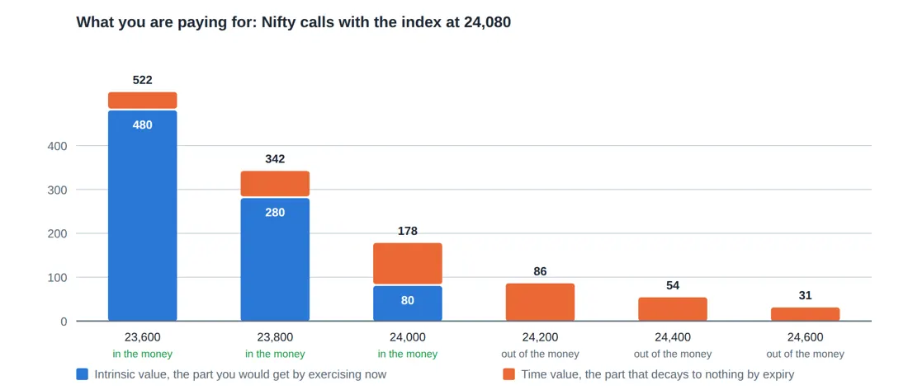
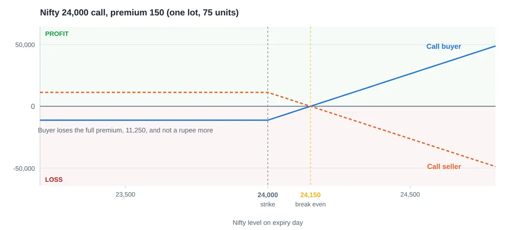
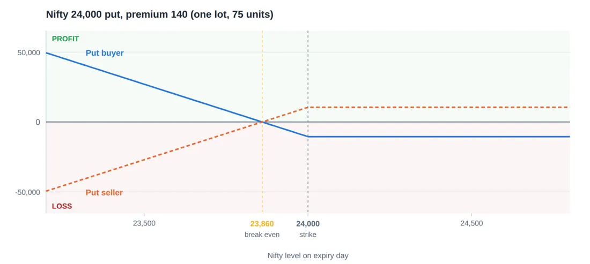

Library / MiyeeStockBuddy: The Complete Guide to Indian Markets
Part 10. Options: The Grammar
An option is a contract that gives one side a right and the other side an obligation. That asymmetry is the whole idea, and everything else follows from it. Get this part properly and the Greeks in Part 11 become obvious rather than mysterious.
10.1 The One Sentence Definition
The definition, and the four words that matter A call option gives the buyer the right, but not the obligation, to buy the underlying at a fixed price on or before a fixed date. A put option gives the buyer the right, but not the obligation, to sell the underlying at a fixed price on or before a fixed date. For that right the buyer pays a premium, which is gone forever whether the right is used or not. |
Think of it like this You find a flat you like, priced at eighty lakh rupees. You are not ready to buy today, and you fear the price will rise. You pay the owner one lakh rupees for a written agreement: for the next six months, you may buy this flat at eighty lakh whenever you choose. If the price rises to ninety five lakh, you exercise your right, buy at eighty, and you are fifteen lakh better off less the one lakh you paid. If the price falls to seventy lakh, you simply do not use the agreement. You buy in the open market instead, or you buy nothing. Your loss is the one lakh, and nothing more. That agreement is a call option. The one lakh is the premium. The eighty lakh is the strike price. The six months is the expiry. The owner of the flat is the option seller, and he keeps your one lakh in every case. |
Every option in the market is that agreement, standardised so that strangers can trade it. Notice what the buyer gained: a known, limited loss and an open ended gain. Notice what the seller gained: a certain small income and an obligation he cannot escape. Neither of those is better. They are different trades with different shapes.
10.2 The Four Positions, and Why There Are Only Four
There are two kinds of option and two sides to each, which makes four positions. Every strategy in Part 14, however complicated it looks, is built entirely from these four.
Position | You believe | Maximum profit | Maximum loss | |
|---|---|---|---|---|
Buy a call | The price will rise, and soon | Unlimited | The premium paid | |
Sell a call | The price will not rise much | The premium received | Unlimited | |
Buy a put | The price will fall, and soon | Large, down to zero | The premium paid | |
Sell a put | The price will not fall much | The premium received | Large, down to zero | |
The rule to remember Buyers have limited loss and pay for it. Sellers have limited profit and are paid for it. Roughly three quarters of options expire worthless, which sounds like an argument for always selling. It is not, because the quarter that do not expire worthless can take back several years of collected premium in a single week. This is the central tension of option trading and no strategy removes it. | ||||
10.3 Strike, Premium and Moneyness
The strike price is the fixed price written into the contract. For any underlying, the exchange lists many strikes, spaced at regular intervals, and you choose which one to trade. That choice matters more than most beginners realise.
Moneyness describes where the current price sits relative to your strike, and it has three states.
For a CALL with Nifty at 24,080 | Name | Meaning |
|---|---|---|
Strike 23,800 | In the money (ITM) | Exercising now would be profitable. It has real value inside it. |
Strike 24,100 | At the money (ATM) | The strike is roughly where the index is. The most actively traded. |
Strike 24,600 | Out of the money (OTM) | Exercising now would be pointless. It is worth something only because the index might move. |
For puts, the same words apply in reverse: a put is in the money when the strike is above the current price, because you would be selling above the market.
10.4 Intrinsic Value and Time Value: The Most Important Split
Every premium you will ever pay is made of exactly two components. Understanding this split explains almost every confusing thing that happens to an option position.
Premium = Intrinsic value + Time value Intrinsic value = what the option is worth if exercised right now Call: spot minus strike, and never below zero Put: strike minus spot, and never below zero Time value = everything else you are paying It is rent on time and on the possibility of movement On expiry day it is always exactly zero |

Premium in rupees per unit
Figure 31. Every premium is two numbers stacked. The blue block is real, you could collect it today. The orange block is rent on time and hope, and on expiry day it is always zero. Notice it is thickest at the strike nearest the index.
Splitting three real premiums Nifty is at 24,080, with fifteen days to expiry. 24,000 call quoted at 178: Intrinsic = 24,080 - 24,000 = 80. Time value = 178 - 80 = 98. You are paying 80 for something real and 98 for the chance of more. 24,400 call quoted at 54: Intrinsic = 0, because exercising at 24,400 when the index is 24,080 makes no sense. Time value = 54. The entire premium is hope, and all of it decays to zero. 23,600 call quoted at 522: Intrinsic = 480. Time value = 42. Almost all real value. It behaves much more like the index itself, and it costs far more. |
The three sentences to remember An out of the money option is one hundred percent time value. If the index does not move, it goes to zero. Guaranteed, not likely. Time value is largest for the strike nearest the current price, because that is where the outcome is most uncertain, and uncertainty is what you are buying. On expiry day every option in the market is worth exactly its intrinsic value. Every rupee of time value in the market that morning becomes zero by the close. |
10.5 The Payoff Diagrams, and How To Read One
A payoff diagram shows profit on the vertical axis against the price of the underlying on expiry day along the horizontal. It is the single most useful picture in options, because it turns a paragraph of conditions into a shape you can see at a glance.
The call

Premium paid 150 x 75 = 11,250
Figure 32. Buying a call risks only the premium, however far the index falls, but needs the index above 24,150 just to break even. Selling the same call is the mirror image: a small capped gain, and a loss with no natural limit.
The buyer’s line is flat and negative below the strike, because the option expires worthless and the premium is lost. It bends upward at the strike and crosses zero at the break even, which is the strike plus the premium paid. Above that it rises one for one with the index.
Call buyer, 24,000 strike, premium 150, lot 75 Break even = 24,000 + 150 = 24,150 Maximum loss = 150 x 75 = 11,250 (at or below 24,000) Profit at 24,400 = (400 - 150) x 75 = 18,750 Profit at 24,150 = 0 Profit at 24,100 = (100 - 150) x 75 = -3,750 still a loss, though the view was right |
Careful here Look at that last line carefully. Nifty rose 100 points, exactly as you predicted, and you still lost money. The move has to exceed the premium before you make anything. This is the most common way a beginner is right about direction and wrong about the trade. |
The put

Premium paid 140 x 75 = 10,500
Figure 33. A put is the same contract pointed the other way. The buyer profits as the index falls and pays a fixed premium to find out; the seller collects that premium and carries the fall.
Put buyer, 24,000 strike, premium 140, lot 75 Break even = 24,000 - 140 = 23,860 Maximum loss = 140 x 75 = 10,500 (at or above 24,000) Profit at 23,600 = (400 - 140) x 75 = 19,500 Maximum possible gain = (24,000 - 0 - 140) x 75, if the index went to zero, which it will not |
A put buyer’s profit is large but not infinite, because the underlying cannot fall below zero. In practice this distinction never matters. What matters is that a put is the cheapest way to protect a portfolio without selling it, which is Part 14.
10.6 Selling Options: The Side Most Retail Traders Underestimate
An option seller, also called a writer, takes the premium up front and accepts the obligation. The money arrives immediately, which feels wonderful, and that feeling is precisely the problem.
Look again at the call payoff diagram. The seller’s line is flat and positive below the strike, and then falls away with no floor. On any ordinary week the seller collects. On the week the index gaps five percent, the seller can lose several years of collected premiums.
Think of it like this Selling options is like selling insurance on scooters. Most months nothing happens and the premiums are pure income. Then a flood comes, and every policy claims at once. An insurance company survives this because it prices for the flood, holds capital against it, and reinsures the tail. A retail trader selling naked options is running an insurance company with none of those three things. |
The arithmetic that catches option sellers You sell one Nifty 24,400 call for 62 and collect 62 x 75 = 4,650. Nifty is at 24,000, comfortably away. For eleven weeks this works and you collect roughly 51,000 in total. In week twelve a global event moves Nifty to 25,100 overnight. The call is now worth 700 points of intrinsic value. Your loss = (700 - 62) x 75 = 47,850 on that one lot. Eleven weeks of income, gone in one session, on one lot. Most people in that situation were carrying three or four lots. None of this is unlikely. It is the shape of the trade, and it is what the premium was paying you for all along. |
The rule to remember Never sell a naked option, meaning one with no protective position behind it, unless you can genuinely afford the worst case and have decided in advance what you will do at a specific level. The defined risk versions in Part 14 give up some income to remove exactly this problem, and for almost every individual that trade is worth making. |
10.7 Exercise, Assignment and Settlement
Three mechanical points that decide what actually happens to your position, and which cause real losses when misunderstood.
European style, which is what India uses
All options on Indian exchanges are European style, meaning they can only be exercised at expiry, not before. This does not trap you: you can still close the position any day by selling what you bought. It simply means the buyer cannot force the seller to settle early.
Assignment
If you sold an option that finishes in the money, you are assigned, meaning your obligation is enforced. You do not get a choice and you are not asked. For index options the exchange debits the cash difference. For stock options you must deliver or receive the actual shares.
Automatic exercise, and the tax trap on expiry day
Any option that finishes in the money is exercised automatically. That sounds convenient and contains a genuine trap in India.
Careful here Securities Transaction Tax is charged at one rate on the premium when you sell an option in the market, and at a much higher rate on the full settlement value when an option is exercised at expiry. The consequence: an option that finishes barely in the money can cost you more in tax than the intrinsic value it delivers. A contract worth a few rupees of intrinsic value can produce an STT bill larger than the payout. The fix is simple and costs nothing. Close in the money options in the market before expiry rather than letting them be exercised. Thousands of traders learn this the hard way each year. |
© Vipin Nair. This guide is for reading online only. Copying, downloading, printing and redistribution are not permitted. For study and general reference; not legal, tax or investment advice.